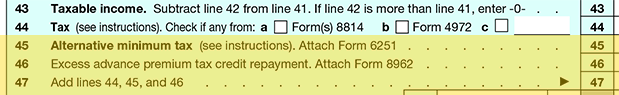

Once the tentative tax has been calculated, it may also be necessary to compute the Alternative Minimum Tax. The Alternative Minimum Tax (AMT) is a separate income tax system that operates parallel to the regular income tax system. The original idea behind the tax was to prevent the wealthy from paying little or no income tax. Thus, its intent is to make sure each taxpayer pays some minimum level of income tax. It targets areas of tax preference and applies to individuals as well as trusts, estates and certain corporations.
Taxpayers who may be affected by the AMT must recalculate their tax under a different set of rules that treat some income and deductions differently from the regular income tax rules. This is accomplished by completing Form 6251, a copy of which can be viewed and printed by clicking here.
If the resulting AMT calculation results in a higher tax calculation than the regular tax, then the taxpayer must pay the higher AMT amount by entering the increase on line 45 and adding it to the prior income tax calculation.

The American Taxpayer Relief Act of 2012 provided inflation indexing for the AMT at long last. In 2016, the AMT exemption amount for married filing jointly taxpayers was increased to $83,800, to $53,900 for single taxpayers, and to $41,900 for married filing separately taxpayers. The AMT exemption phases out above certain AGI thresholds.